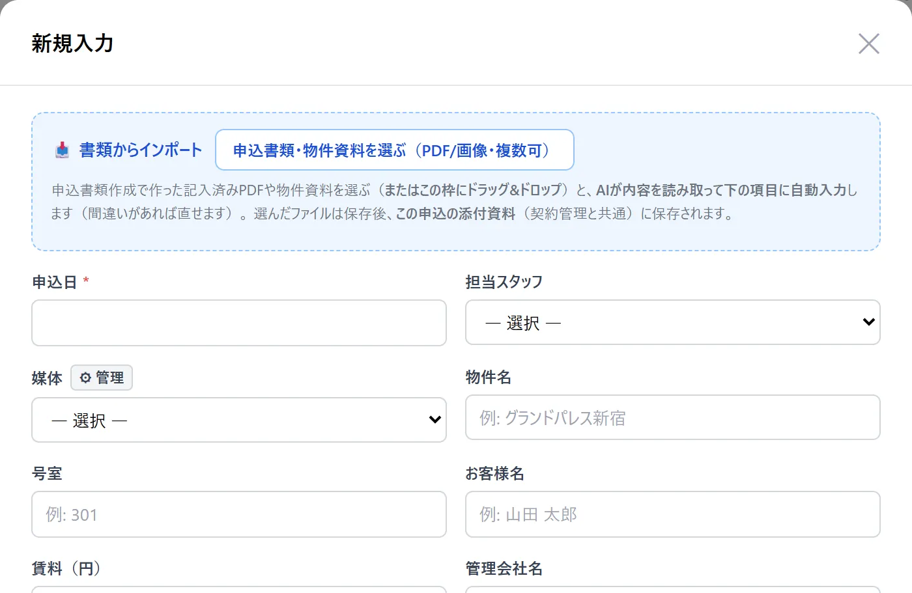
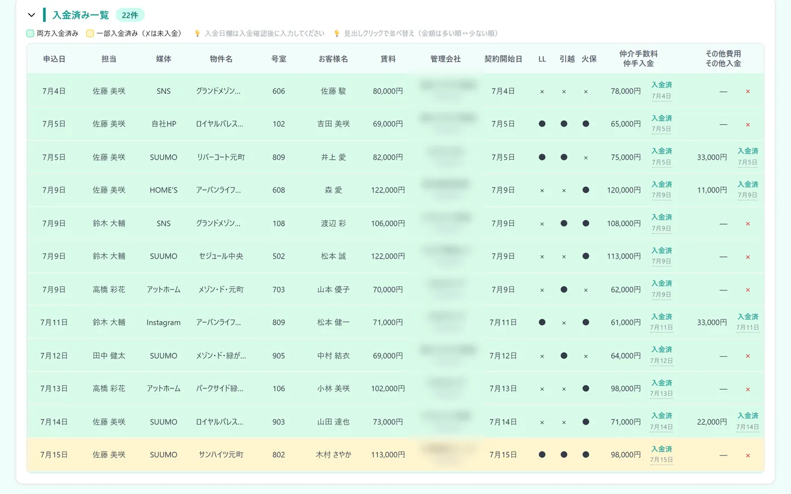

こんな困りごとに
- 誰がいくら未入金なのか、すぐに答えられない
- 後ADや相殺の管理が、担当者の記憶頼みになっている
- 入金の確認があいまいで、月末に売上の数字が合わない
この機能でできること
- 申込ごとに仲介手数料・AD・その他費用・入金日をまとめて記録
- 入金は「報告 → 承認」で確定し、入金月の売上に自動で集計
- ADは「相殺」「後AD」を選んで記録。未入金と入金済みを分けて一覧に
メニューの場所左メニュー「営業分析 › 申込管理表」
使い方（3ステップ）
-
1
申込を登録する
右上の「＋ 新規入力」を押し、申込日・担当・媒体・物件名・お客様名・仲介手数料・AD金額などを入れて保存します。審査で「○」を選ぶと、ステータスは自動で「契約」になります。

-
2
入金を報告して、承認する
一覧の入金欄の「報告」を押して、入金日を選びます。店長・オーナーが「承認」すると入金が確定し、その月の売上に集計されます。確定した入金は、画面の下の「入金済み一覧」に並びます。承認待ちの報告は、右上のベルのお知らせにも出ます。

- 3
よくある質問
自社で使っている項目（例：消毒・紹介元）を足せますか？
足せます。新規入力フォームから、付帯項目や申込情報の項目を追加したり、ステータスの名前を変えたり、「審査中」などのステータスを追加したりできます。追加と編集はオーナー／店長が行えます。
間違えて削除した申込は戻せますか？
戻せます。削除したデータは10日間保管され、左メニュー「バックオフィス › 変更・削除ログ」から元の内容のまま戻せます（オーナー／店長）。